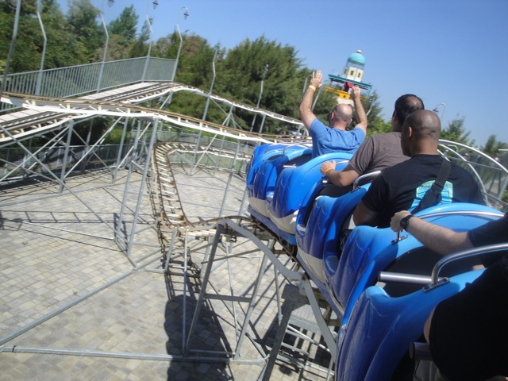
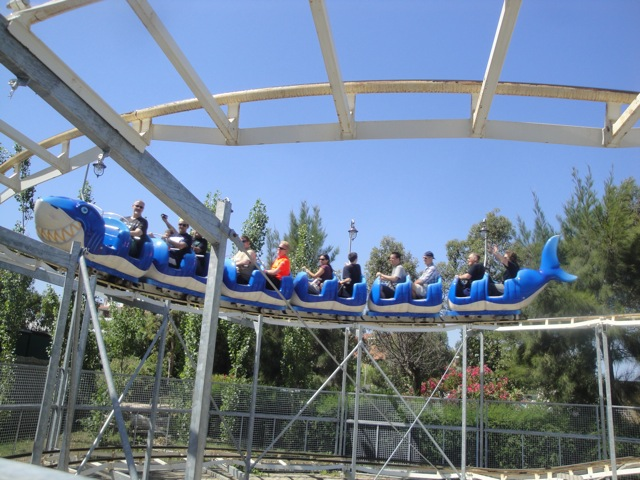

| |
Squalotto Review

Once you get in the seat, you out of the station and away you go. There's a small drop out of the station which is followed by the lift hill. After climbing up the 10 ft lifthill, you go around a turn and is followed by a little dip, the you go through another turn to face the final 6 ft drop then you go around another turn, and then you again. You get 3 laps around the track. It's an ok kiddy coaster and a nice fit for a small park like this. Hey, it's even got mild theming. Wacky Shark! I would only recommend it if you are a credit whore or are just getting into coasters.
2/10
Location: Zoomarine
Opened: 2011
Built by: Unknown
Last Ridden: June 17, 2012
I have ridden this exact same ride at the following parks.
American Fairs
Djurs Sommerland
Eden Park
Lake Winnie
Rainbow Magicland
Sommerland Sjaelland
Walygator Parc
Squalatto Photos


|